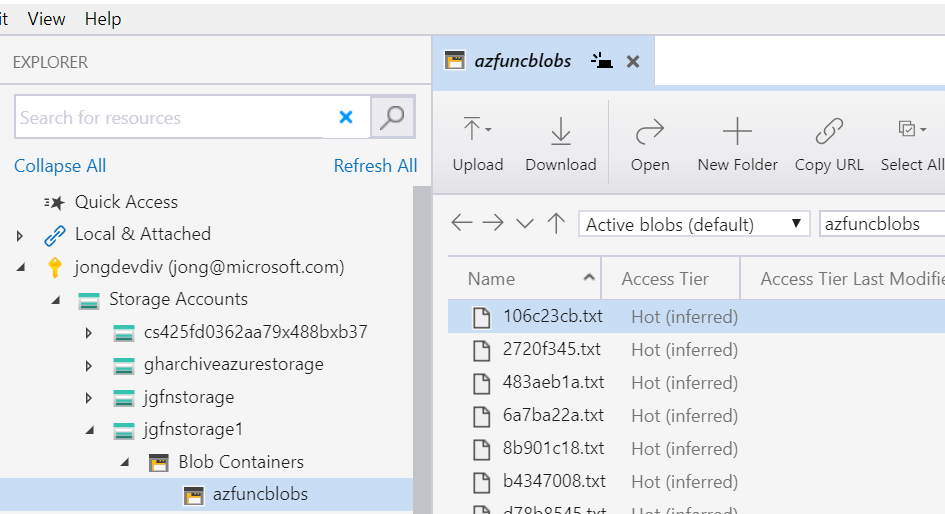
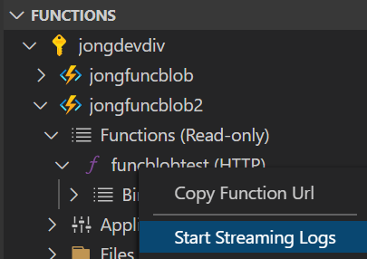

In this 3 part series we are going to learn a few methods for developing an Azure Function that uploads blobs to Azure Storage using the new Azure Blob Storage and Azure Identity Client Libraries.
Code: The code for this series can be found here: https://github.com/jongio/azure-blob-functions-managedid
Part 1: Local Function with Storage Emulator (local function, local storage)
Part 2: Local Function with Azure Storage and Service Principal (local function, cloud storage)
Part 3: Azure Function with Azure Storage and Managed Identity (cloud function, cloud storage)
Azure Function with Azure Storage and Managed Identity (cloud function, cloud storage)
In Parts 1, we create a local function, wrote blobs to Azurite a local storage emulator and then in Part 2 we configured it to upload blobs to Azure Storage using AzureCliCredential. In Part 3 we are going to deploy our Azure Function to Azure and use Managed Identitiesl. A Managed Identity is a Service Principal under the hood, but Azure takes care of regular maintenance of it and enables you to deploy your app with zero code or configuration changes. You just use DefaultAzureCredential in your app and it will automatically pick up the Managed Identity and use it to authenticate with other Azure services.
Azure Setup
- Create Azure Functions Storage Account
Azure Functions store metadata and logs in an Azure Storage Account. You can use the same storage account that you created earlier to upload your blobs to or you can create a new one.
Options:
Option 1. Use the same storage account that you created above and skip this step.
Option 2. Create a new storage account for Function metadata using the following command:
az storage account create -n FUNCTIONS_STORAGE_ACCOUNT_NAME -g RESOURCE_GROUP_NAME --kind StorageV2 --sku Standard_LRSParameters:
FUNCTIONS_STORAGE_ACCOUNT_NAMEThis is the name of the storage account that you want to store your Azure Functions metadata in.RESOURCE_GROUP_NAMEThe name of the resource group that you created earlier.--sku- List of available SKUs can be found here: SKU Types
- Create App Service Plan
We are going to put our Function in an App Service Plan because that enables log streaming (among other features), whereas a Consumption based Azure Function (Linux) does not - at least not yet.
az appservice plan create -n APP_SERVICE_PLAN_NAME -g RESOURCE_GROUP_NAME --is-linux --sku B1Parameters:
APP_SERVICE_PLAN_NAMEA name that you choose to give your app service plan.RESOURCE_GROUP_NAMEThe name of the resource group that you created earlier.--is-linuxYou can remove this parameter if you want to use Windows--skuYou can also choose--sku F1for a free app service plan, but you are only allowed one per subscription. You can find all of the App Service Plan SKUs here: az appservice plan create
- Create Azure Function App
This is the actual Function app that we will upload our Function app project.
az functionapp create -n FUNCTION_APP_NAME -g RESOURCE_GROUP_NAME --storage-account FUNCTIONS_STORAGE_ACCOUNT_NAME --plan APP_SERVICE_PLAN_NAME --runtime dotnet --os-type Linux --functions-version 3Parameters:
FUNCTION_APP_NAMEA name that you choose to call your function app.RESOURCE_GROUP_NAMEThe same resource group name that you created earlierFUNCTIONS_STORAGE_ACCOUNT_NAMEIf you only created one storage account for both Azure Function metadata and blobs, then use that single account. If you created multiple accounts, then enter the name of the one that you want your metadata stored in here.APP_SERVICE_PLAN_NAMEThe name of the app service plan you created earlier.--runtimeWe are using dotnet in this post, but you can use any of the available options. Obviously your code will need to change to reflect that option.--os-typeYou can choose Windows and it should work exactly the same way.--functions-versionThe default is 2, so we want to set to 3.
- Set Function App Settings
As you saw above, our code depends on two environment variables:
var account = Environment.GetEnvironmentVariable("AZURE_STORAGE_ACCOUNT");
var container = Environment.GetEnvironmentVariable("AZURE_STORAGE_CONTAINER");For local deployments, those are configured in the local.settings.json file. When we deploy to Azure we’ll need those settings in the Function app. Use the following commands to update those settings.
az functionapp config appsettings set -n FUNCTION_APP_NAME -g RESOURCE_GROUP_NAME --settings "AZURE_STORAGE_ACCOUNT=BLOB_STORAGE_ACCOUNT_NAME" "AZURE_STORAGE_CONTAINER=azfuncblobs" "AZURE_STORAGE_HOST=blob.core.windows.net"Parameters:
FUNCTION_APP_NAMEA name that you choose to call your function app.RESOURCE_GROUP_NAMEThe same resource group name that you created earlierBLOB_STORAGE_ACCOUNT_NAMEThe storage account name that you would like to store the blobs in.AZURE_STORAGE_CONTAINERYou can also change the name of the container. For this post it is azfuncblobs.
Assign Managed Identity to Function App
You have two options when it comes to choosing a Managed Identity: System Assigned or User Assigned. With System Assigned Azure will create the identity on your behalf, with User Assigned, you first create the identity and then assign it. User assigned is useful when you want to reuse the identity across multiple Azure resources.
Option 1: Assign a System Assigned Managed Identity to Function App
This will enabled a Managed Identity for the Function App and assign it the Storage Blob Data Contributor role. You don’t have to individually create a Managed Identity and assign it roles - you can do it all in this one command.
az functionapp identity assign -n FUNCTION_APP_NAME -g RESOURCE_GROUP_NAME --role ba92f5b4-2d11-453d-a403-e96b0029c9fe --scope /subscriptions/SUBSCRIPTION_IDParameters:
FUNCTION_APP_NAMEThe function app name you created earlier.RESOURCE_GROUP_NAMEThe resource group you created earlier.SUBSCRIPTION_ID- The subscription id that the function is in. Runaz account showto get this value.--role- The GUIDba92f5b4-2d11-453d-a403-e96b0029c9feis the ID for the Storage Blob Data Contributor role. You can find all of the built-in Azure roles here: Built-in roles for Azure resources
Option 2: Assign a User Assigned Managed Identity to Function App
With this option, you first create the Managed Identity and then assign it to the Function App. This is useful if you want to reuse the identity for multiple resources, but Azure still manages it the way it manages system assigned identities.
- Create the User Assigned Managed Identity
az identity create -g RESOURCE_GROUP_NAME -n USER_ASSIGNED_IDENTITY_NAMEParameters:
RESOURCE_GROUP_NAMEThe resource group you created earlier.USER_ASSIGNED_IDENTITY_NAMEA unique identity name that you create.
- Get the User Assigned Managed Identity Metadata
We are going to need the resource id and client id in a minute, so let’s get them now.
az identity list -g RESOURCE_GROUP_NAMEParameters:
RESOURCE_GROUP_NAMEThe resource group you created earlier.
Copy the
clientIdandid, you will need it in later steps.
- Assign the Storage Blob Data Contributor Role to the User Assigned Identity
az role assignment create --assignee USER_ASSIGNED_IDENTITY_CLIENT_ID --role ba92f5b4-2d11-453d-a403-e96b0029c9feParameters:
USER_ASSIGNED_IDENTITY_CLIENT_IDThis is the “clientId” property that you retrieved in the last step.--role- The GUIDba92f5b4-2d11-453d-a403-e96b0029c9feis the ID for the Storage Blob Data Contributor role. You can find all of the built-in Azure roles here: Built-in roles for Azure resources
- Assign the User Assigned Identity to the Function App
az functionapp identity assign -n FUNCTION_APP_NAME -g RESOURCE_GROUP_NAME --identities USER_ASSIGNED_IDENTITY_RESOURCE_IDParameters:
FUNCTION_APP_NAMEThe function app name you created earlier.RESOURCE_GROUP_NAMEThe resource group you created earlier.USER_ASSIGNED_IDENTITY_RESOURCE_IDThe complete Azure resource id for the user assigned identity, which you retrieved earlier. USER_ASSIGNED_IDENTITY_RESOURCE_ID below is the complete path to the Resource in Azure, not a GUID, not a clientId, it looks something like this:/subscriptions/25fd0362-aa79-488b-b37b-d6e892009fdf/resourcegroups/jgfnrg1/providers/Microsoft.ManagedIdentity/userAssignedIdentities/jgfnmanid1
- Set Environment Variables
Because you are using a User Assigned Managed Identity, we are going to have to manually set some Environment Variables to explicitly tell Azure which Identity to use:
az functionapp config appsettings set -n FUNCTION_APP_NAME -g RESOURCE_GROUP_NAME --settings "AZURE_CLIENT_ID=USER_ASSIGNED_IDENTITY_CLIENTID" "AZURE_TENANT_ID=TENANT_ID"Parameters:
FUNCTION_APP_NAMEThe function app name you created earlier.RESOURCE_GROUP_NAMEThe resource group you created earlier.USER_ASSIGNED_IDENTITY_CLIENTIDThis is the client id for the user assigned managed identity that you created earlierTENANT_IDThis is the Azure tenant that your subscription lives in - you can find this withaz account show --query tenantId -o tsv.
If you don’t do this, then you’ll likely see the following exception later in the logstream. (See below for info on how to view the logstream)
{"statusCode":400,"message":"Unable to load requested managed identity.","correlationId":"fc7504dd-c16c-4526-b8a8-667f6463d306"}Now that you have your Managed Identity configured it is time to deploy our Function to Azure.
Deploy Azure Function to Azure
We are now FINALLY ready to deploy the Azure Function to Azure and test it out.
- Deploy the Function
Open a terminal and execute the following command to deploy your local function to Azure. There are many ways to deploy an Azure Function, for this example we’ll use the Azure Function Core Tools
func azure functionapp publish FUNCTION_APP_NAMEParameters:
FUNCTION_APP_NAMEThe function app name you created earlier.
Notes:
- If you see the following exception, then try again in a few minutes. I got this error. Waiting a few minutes, ran it again and it worked:
Getting site publishing info...
Creating archive for current directory...
Uploading 3.19 MB [###############################################################################]
Upload completed successfully.
Deployment completed successfully.
Response status code does not indicate success: 400 (Bad Request).- This step can take a few minutes and may not work the first time. If you don’t get back a URL, then keep trying until you do. You may see output like this last doesn’t include the URL. Just try again.
- Test the Function
Once it has been successfully deployed, it will output the Function URL
Getting site publishing info...
Creating archive for current directory...
Uploading 2.97 MB [###############################################################################]
Upload completed successfully.
Deployment completed successfully.
Functions in jgfnapp1:
upload - [httpTrigger]
Invoke url: https://jgfnapp1.azurewebsites.net/api/upload?code=CRGo to that URL to execute the function and verify that a file was uploaded.

Notes:
- If it doesn’t succeed right away, give it a few minutes to cycle, restart the app, and try again.
- If you see the following error, you’ll want to verify that your Managed Identity is configured correctly.
2020-01-31T23:38:19.117 [Error] Executed 'func1' (Failed, Id=09062b19-c7e8-45f6-a9bc-d828d47adbb2)
Environment variables not fully configured. AZURE_TENANT_ID and AZURE_CLIENT_ID must be set, along with either AZURE_CLIENT_SECRET or AZURE_USERNAME and AZURE_PASSWORD. Currently set variables [ ]You can view the Managed Identities assigned to your Function by executing the following command:
az resource list -n FUNCTION_APP_NAME -g RESOURCE_GROUP_NAMEWhich will output something like this:
{
"id": "/subscriptions/25fd0362-aa79-488b-b37b-d6e892009fdf/resourceGroups/jgfnrg1/providers/Microsoft.Web/sites/jgfnapp1",
"identity": {
"principalId": "ca9937fe-2967-443b-99c1-c480bf6000dd",
"tenantId": "72f988bf-86f1-41af-91ab-2d7cd011db47",
"type": "SystemAssigned",
"userAssignedIdentities": null
},
"kind": "functionapp,linux,container",
"location": "westus2",
"managedBy": null,
"name": "jgfnapp1",
"plan": null,
"properties": null,
"resourceGroup": "jgfnrg1",
"sku": null,
"tags": null,
"type": "Microsoft.Web/sites"
}- Debug the Function
If you get any failures, or if you just want to view the logs you can view the Function App logstream.
You have a couple of options:
Option 1: VS Code Debugging
If you have VS Code and the VS Code Functions extension, you can just hit F5 and step through your code.
Option 2: Azure Functions VS Code Extension
Open the Azure VS Code extension, expand FUNCTIONS, find your Function, right-click and select “Start Streaming Logs”. That will open the Azure portal and you can view your logs.

You can install the VS Code extension here: Install Azure Functions VS Code Extension (Optional)
Option 3: Azure Functions Core Tools
You can also view the logstream via the terminal using the Azure Function Core Tools
func azure functionapp logstream FUNCTION_APP_NAMEParameters:
FUNCTION_APP_NAMEThe function app name you created earlier.
Option 4: Azure Portal
Go to the Azure Portal and find your Azure Function. You can run it from within the browser and see return codes and exceptions.
- Verify Success with Storage Explorer
Open Storage Explorer and navigate to: Subscription -> Storage Accounts -> Storage Account -> Blob Containers -> azfuncblobs
Verify that your file has been successfully uploaded.
Conclusion
We covered a lot in this series. My hope is that learning about the 3 different combinations of local and cloud dev with Managed Identities and the new Azure Identity DefaultAzureCredential will help you be more productive.
Part 1: Local Function with Storage Emulator (local function, local storage)
Part 2: Local Function with Azure Storage and Service Principal (local function, cloud storage)
Part 3: Azure Function with Azure Storage and Managed Identity (cloud function, cloud storage)
Please leave a comment below if you found this post helpful or need help with any of this.
Jon